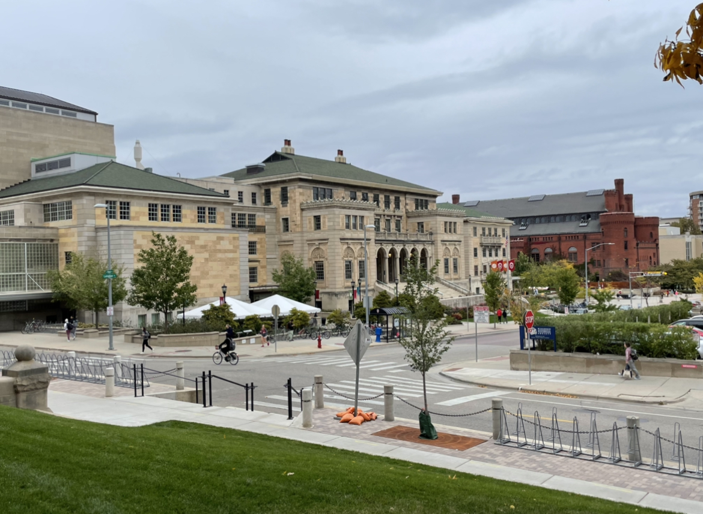

After living and going to school in Madison for over two years, it has become one of Bobby's favorite spots. Here are some of his favorite parts about UW and the city of Madison.
Some of the best parts of fall are Gamedays for football. The city becomes alive with people as students attend tailgates, and alumni and parents visit for the day. Eventually, everyone converges to Camp Randall to watch the Badgers play some football. In particular, Bobby enjoys attending the tailgates and watching the Badgers play on Barry Alvarez Field. He also enjoys watching everyone come together to cheer on the Badgers.
Bobby's favorite spot to go on campus is easily Memorial Union. The union offers places to study and relax and a variety of food options. However, the best part of Memorial Union is easily the terrace. Here, you can come to watch the sunset over Lake Mendota or listen to live music. No matter what, Memorial Union always has something to do. To see food and entertainment options at the union, check out their website by clicking the link below.
Another terrific part of Madison is the nightlife and the social scene. Bobby enjoys meeting new people and socializing. Madison weekends are the perfect times to do this. With plenty of nighttime spots to go to and an undergraduate population of over 30,000, it's almost hard not to interact with others. The social scene in Madison makes it one of the best college towns in the United States.